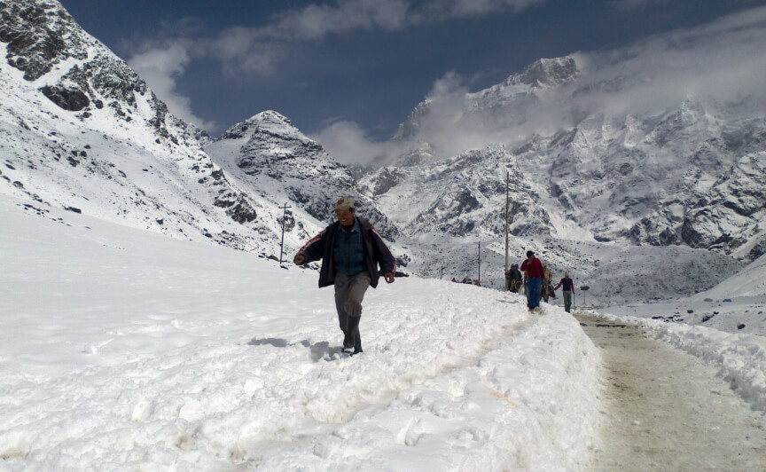

About Kedarnath.
- One of the most revered temple towns of India
- Kedarnath is one of the twelve revered Jyotirlingas of Lord Shiva.
- It's a part of the Char Dham pilgrimage, a circuit connecting four important Hindu shrines.
- Situated in the Rudraprayag district of Uttarakhand, in the lap of the Garhwal Himalayas.
- The region around Kedarnath is historically known as "Kedar Khand".
What to do in Kedarnath.

The trek to Kedarnath is a 18 km trek which starts from Gaurikund till Kedarnath. The trek has changed since the 2013 flood disaster in Uttrakhand and since then the 14 km trek to Kedarnath has increased to a 16km trek.

One can also enjoy the natural beauty of the region by setting up tents near Kedarnath town. Experience the divine surroundings with the towering Kedarnath peak looming large and star-filled sky during night.
The Kedarnath peak and Kedarnath Dome both offer great rock climbing opportunities with rocks, ice walls, crevasses, etc, attracting professional climbers. Both peaks have relatively easy routes on their northwest sides. The east face of Kedar Dome is more challenging to climb